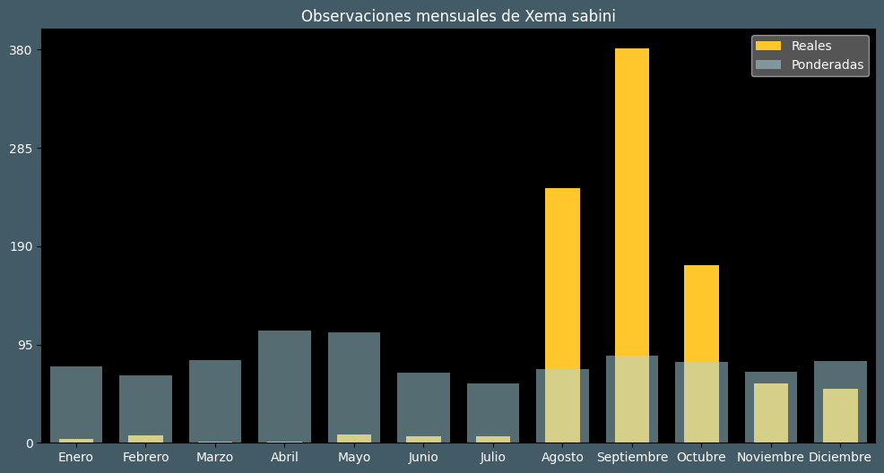

Observaciones por mes
Observations por hora

Categoría IUCN: LC
Género: Xema
Familia: Laridae
Orden: Charadriiformes
Descubrimiento: Sabine (1819)
| Idioma | Nombre |
|---|---|
| Afrikaans (af) | Mikstertmeeu |
| Arabic (ar) | نورس سابيني |
| Belarusian (be) | ? |
| Bulgarian (bg) | Вилоопашата чайка |
| Catalan (ca) | Gavineta de sabine |
| Chinese (zh) | 叉尾鸥 |
| Chinese traditional (zh-TW) | 叉尾鷗 |
| Croatian (hr) | Galeb lastar |
| Czech (cs) | Racek sabinův |
| Danish (da) | Sabinemåge |
| Dutch (nl) | Vorkstaartmeeuw |
| English (en) | Sabine's gull |
| Estonian (et) | Harksaba-kajakas |
| Finnish (fi) | Tiiralokki |
| French (fr) | Mouette de sabine |
| German (de) | Schwalbenmöwe |
| Greek (el) | ? |
| Hebrew (he) | שחף קדוד-זנב |
| Hungarian (hu) | Fecskesirály |
| Icelandic (is) | Þernumáfur |
| Indonesian (id) | Camar sabine |
| Italian (it) | Gabbiano di sabine |
| Japanese (ja) | クビワカモメ |
| Korean (ko) | 목테갈매기 |
| Latvian (lv) | Šķeltastes kaija |
| Lithuanian (lt) | Žuvėdrinis kiras |
| Maceodnian (mk) | ? |
| Malayalam (ml) | സബീൻ കടൽക്കാക്ക |
| North_sami (se) | Čearretbáiski |
| Norwegian (no) | Sabinemåke |
| Persian (fa) | ? |
| Polish (pl) | Mewa obrożna |
| Portuguese (pt) | Gaivota-andorinha |
| Russian (ru) | Вилохвостая чайка |
| Serbian (sr) | Lastorepi galeb |
| Slovak (sk) | Čajka vidlochvostá |
| Spanish (es) | Gaviota de sabine |
| Swedish (sv) | Tärnmås |
| Thai (th) | ? |
| Turkish (tr) | Çatal kuyruklu martı |
| Ukrainian (uk) | Мартин вилохвостий |